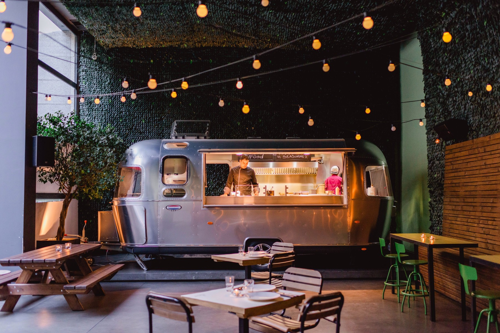

Quienes Somos?
Somos un restaurante apasionado que se dedica a llevar los sabores tradicionales de Venezuela a diferentes lugares de Buenos Aires a través de nuestro food truck, para que todos puedan disfrutar de esta joya gastronómica. Nuestro equipo está compuesto por verdaderos amantes de la comida venezolana, que han trabajado arduamente para crear un menú auténtico y variado que refleja la diversidad y la riqueza culinaria de nuestra tierra natal. Cada arepa que servimos es cuidadosamente elaborada con ingredientes frescos y de calidad, siguiendo recetas tradicionales transmisores de generación en generación.
